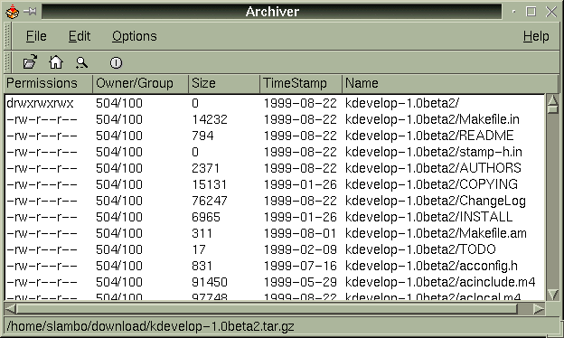
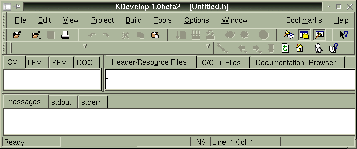
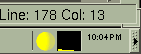

![[ Table of Contents ]](../gx/indexnew.gif)
![[ Front Page ]](../gx/homenew.gif)
![[ Linux Gazette FAQ ]](./../gx/dennis/faq.gif)
One of the greatest strengths of the Open Source movement is the availability of source code for almost every program. This article will discuss in general terms, with some examples, how to install a program from source code rather than a precompiled binary package. The primary audience for this article is the user who has some familiarity with installing programs from binaries, but isn't familiar with installing from source code. Some knowledge of compiling software is helpful, but not required.
Although it may not be entirely obvious, the first thing that you will need to do to install a program from source code is to get the source code. While there are several excellent ftp archives, often I've had better luck downloading and installing code from individual project homepages. For the example in this article, I will describe how to install two programs: KDevelop (an integrated development environment) and klavg (displays the system load average in the KPanel), both of which are available from the KDE applications page.
On my own system, I use a single directory to store downloads. Every download I do goes into ~/download (while I'm logged in as a user, not as root [1]). Putting all the downloads in one directory serves two purposes: I can always remember where I downloaded a certain file to, and if I've already downloaded a particular file, the downloading software (usually Netscape in my case) can notify me that the filename (and therefore the download) already exists on my hard drive.
Most of the source code packages available for download are distributed as "tarballs". That is, all of the files required to compile and install the application are included in one archive file created with the archiving program tar. Since tar does not perform any compression on the files, merely joins them together under a single file name, the tarball is usually run through a compression program like gzip or bzip before it is distributed. Uaually, such an archive will have a tgz file extension. For the benefit of readers who have just switched from a Windows platform, the combination of these two actions (archive and compression) is very similar to PKZip or WinZip. [2]
The next step, assuming that the download worked without any major problems, is to unpack the archive. Since most current Linux distributions ship with either KDE or GNOME setup as the default desktop manager, most new Linux users will have an archive viewer/extractor already installed. To extract the archive from the command line, use a command like the following:
tar zxvf kdevelop-1.0beta2.tar.gz
This command will extract all files to the current location, expanding the files and creating directories as appropriate (when they are included in the tarball). For more information about tar and its multitude of options, see the man page or any of the many dead tree editions of references for Linux.
I use KDE as my desktop (in case you hadn't guessed that from the two example programs for this article), so this article will mainly focus on using KDE utilities from this point forward. Similar utilities are available for GNOME, and command line utilities are available in most cases. [3] 
To extract the files from the archive, right-click on the file name in KFM and click on Archiver. You will get a window very similar to the one above for KDevelop. From the Archiver's Edit menu, select Extract; click on All Files and select a directory to extract the files to. In most cases, the tarballs will extract by default to a new subdirectory of the directory name you specify. For KDevelop, we can see that the first entry in the tarball is:
drwxrwxrwx 504/100 0 1998-08-22 kdevelop-1.0beta2/
So this archive will extract to the kdevelop-1.0beta2 directory below whatever directory name you specify to Archiver. Similarly, klavg gets extracted to the klavg subdirectory. If the tarball that you obtain to install from source does not include a directory name as the first entry, extract it to an empty directory that you create specifically for it.
The next step, after the archive is extracted to an appropriate directory, is to view the Readme file that is included with the distribution. Almost always there will be a file in the root of the extracted directory called Readme. This file contains important information about the application that is normally needed before the application is installed. Usually the Readme file includes the steps for installing the application. If the tarball does not include a Readme file, look for another file in the same directory called Install. [4] For KDevelop, the README refers users to the INSTALL file, which spells out the exact commands needed to install the program:
./configure make make install
The README that was included with klavg does not describe the steps to install the application, nor was there an Install file included in the tarball. In this case, I found from the application's home page that there are only two commands to install klavg:
make make install
Most application installation procedures will be exceptionally similar. These three commands ('./configure', 'make' and 'make install') are the real meat of compiling and installing the application. The first command, ./configure, will run a series of shell scripts to determine the correct locations of necessary library files and the command names for the currently installed compilers and linkers. This command will also create the Makefile that the application will use to run the compiler and linker and to copy the compiled binaries into their proper locations.
So, if you haven't already, open a terminal window and change to the directory where you unpacked the tarball. In my case for KDevelop, this is /home/slambo/download/kdevelop-1.0beta2/ (/home/slambo/download/klavg/ is the location where I extracted klavg to). Next, run the first of the three commands shown above. Almost always, this process will run without errors. A sample (very abbreviated) output from configure is shown below:
[slambo@jenlamb kdevelop-1.0beta2]$ ./configure
creating cache ./config.cache
checking for extra includes... no
checking for extra libs... no
checking for a BSD compatible install... /usr/bin/install -c
checking whether build environment is sane... yes
checking whether make sets ${MAKE}... yes
checking for working aclocal... found
checking for working autoconf... found
checking for working automake... found
checking for working autoheader... found
checking for working makeinfo... found
checking for a C-Compiler...
checking for gcc... gcc
...
updating cache ./config.cache
creating ./config.status
creating Makefile
creating kdevelop/Makefile
creating po/Makefile
creating kdlgloader/Makefile
...
creating config.h
[slambo@jenlamb kdevelop-1.0beta2]$
The sample configure output here shows only a small amount of the lines that are printed to the terminal. The first line, "creating cache ./config.cache" creates a temporary file where the results of the system probing will be stored. Once that file is created, configure performs its system probing. Typically, as long as the needed libraries and compiler applications are installed, you will see messages very similar to these. Once the probing is finished, configure creates the files that will be used by the next two commands. They are all named Makefile (in different directories) except for the last, config.h, which is used to pass the results of the system probing to the application that you are compiling.
The make command actually performs the compilation and linking. The compilation phase of this process is typically the longest and most likely phase for errors to appear. Usually, when errors do occur on stable applications (check the application's home page to find out which releases are stable releases), they will be due to missing libraries. If you haven't installed all the development libraries from your Linux distribution, do that first and try make again. If you have installed all the libraries from your distribution, take a look at your Linux distribution's homepage and ftp sites for updates or contributed files. [5]
So you've gotten through ./configure, but the compilation presented an error that is not indicative of a missing library, and it won't compile? First, RTFM. Check the documentation that was packaged with the source code. Usually there will be some sort of installation hints in either Readme or Install, or there will often be a complete application manual (or even a man page) in the package. If your compilation issue isn't addressed there, check the application's site for any errata that may have been posted. Perhaps there's a more current release than the one you downloaded from another site.
If you can't find the answer in either the packaged documentation or the application's site, try a newsgroup search at Deja (formerly DejaNews, at www.deja.com). Use the error message you received as your search text and see what you can find.
If all else fails, there is almost always an email address for the application developer (or a Credits file containing many developer contacts). While this is a valuable resource, save it as your "ace in the hole" resource. Usually a careful search of other internet resources will produce an answer before this is necessary, but this resource is there if you need it.
The commands listed above are actually missing a step. Before you run the third command, you need the appropriate privileges for the installation commands and the destination directories. It is for this step and this step alone that you should consider logging into your root account before proceeding.
I must take a moment here to give you a few words about security. Logging in as root by anyone other than the system administrator is an extreme security risk. Your root password should be known only to the sysadmin and trusted allies. If you don't remember everyone who has access to the root account, change the password and let your allies come to you to ask for the new password (in other words, don't publish this information).
Assuming all proper security precautions have been taken, login as root by using the su command and proceed to the next step, make install. This step will usually proceed fairly quickly as most of what this command does will be to copy the files from the compilation directory to either /usr/bin or /usr/local/bin (or some variant, thereof).
There will rarely be an error during this phase of installation. If there is an error, it will normally be due to the process trying to copy into a non-existent directory. Check the resources listed above if there are any errors.  
Once make install is complete, logout of your root account and try the application. At this point, installation is complete and any errors you may receive are strictly program issues that should be answered in the application documentation. A couple of quick screenshots of KDevelop and klavg (which runs as an applet in the system tray on the KDE toolbar) are shown above after I compiled and installed them on my own system.
Let's assume for a moment that the Readme and Install files don't give you much to go on for installation. What now? Well, almost always, the commands to compile and install an application will be exceptionally similar to those listed above. If there's a Makefile in the tarball, then you're going to use the make command to compile, and possibly install the application. If there's a configure shell script included, run it first before make.
While I haven't yet found an application that I've tried to install that didn't have either Readme, Install or both, it is quite possible that such beasts do exist. Use a little common sense and the resources listed above to figure it out. If you can't find the answer, to your question, find the most appropriate forum and ask your question.
I've found that if I have trouble installing an application from an RPM file, installing it from the source code will usually work for me. On my system, I have yet to have a perfect record of compiling and installing from source code, however. The programs that I haven't been able to compile and install have mostly been unstable releases that aren't really intended for other than developers and beta testers. With installing from source, like many facets of Linux, your mileage may vary. But, if you can't install an RPM for some reason, try compiling and installing from the source. It's normally easier than you might think.
Also, if you would like to see the entire typescript files from the compilation and installation of the two sample applications on my machine, they are here: klavg and KDevelop.
[1] In general, logging in as a user rather than root is a Good Thing.
Doing so will prevent you from undue harm when you issue 'rm -rf *' and forget
which directory you are currently in. Additionally, when you're logged in as a
regular user, you can test that the program is available to all of your users
as well as the root user.
[2] Newer versions of WinZip know how to read and extract from tgz archives
just as well as from PKZip archives.
[3] Every Linux distribution that I've played with has included the command
line versions of tar and gzip (since the command line versions were written
first, it only makes sense that they would still be available). Other than
testing the two example programs for this article, command line utilities can
be used for every step of this installation process as well.
[4] Usually both Readme and Install files are saved with all capital letters
(like README and INSTALL) so they sort to the top of the directory listing, and
to set them apart from source code or installation macro files.
[5] If you can't find a missing (needed) library at your distribution's
site, and the application's site doesn't give you any leads, a good location to
search for it is at RPMFind. I've also found it useful to
use the library's name as a search text in my current favorite search engine,
Google.
[6] This quote is from Pitr of UserFriendly fame. It is one of the few
comics that I read on a daily basis.
Copyright © 2000, Sean Lamb
Published in Issue 49 of Linux Gazette, January 2000